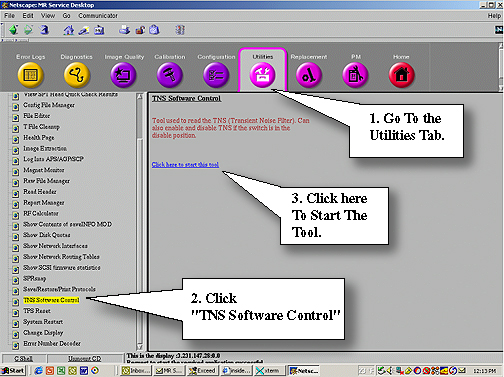
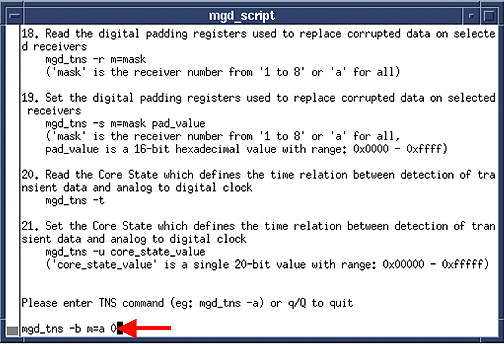
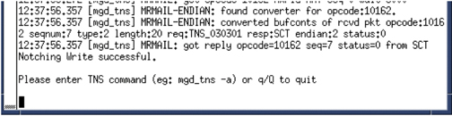

Operating Documentation
Direction 5133330-3, Rev# 14
Signa EXCITE HD 3.0T Service Methods
Module Version 1.0, Version Date 5/3/07
Operating Documentation |
| Required Persons | Preliminary Reqs | Procedure | Finalization |
|---|---|---|---|
| 1 | Not Applicable | 5 mins | Not Applicable |
If the system is equipped with a UTNS3(This does not apply to UTNS or UTNS2.) or DCERD2 See Stopping the TNS Function Via Software for procedure to stop the TNS Function and then Enabling the TNS Function Via Software for turning the TNS Function back on.
On the Common Service Desktop go to the Utilities Tab and start [TNS Software Control]. See Illustration 1.
Illustration 1: Starting TNS Tools

Once the mgd_script page opens, at the command line type: mgd_tns -b m=a 0<Enter> to turn off the TNS Function. See Illustration 2.
Illustration 2: Command Line to Stop UTNS3

You’ll see the Notching Write successful if the shut down was successful. See Illustration 3
Illustration 3: Notching Write Successful Statement

Leave the window open. Closing the window will enable the TNS Function again.
On the Common Service Desktop go to the Utilities Tab and start [TNS Software Control]. See Illustration 1.
Once the mgd_script page opens, at the command line type: mgd_tns -b m=a 1<Enter> to turn on the UNTS3. See Illustration 4.
Illustration 4: Starting The UTNS3

If successful you will see notching will be enabled for all channels. See Illustration 5.
Illustration 5: Successful

Select q to exit from the window.
No finalization steps.